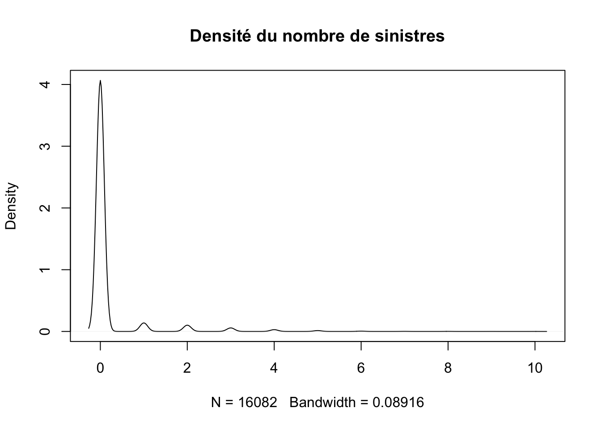
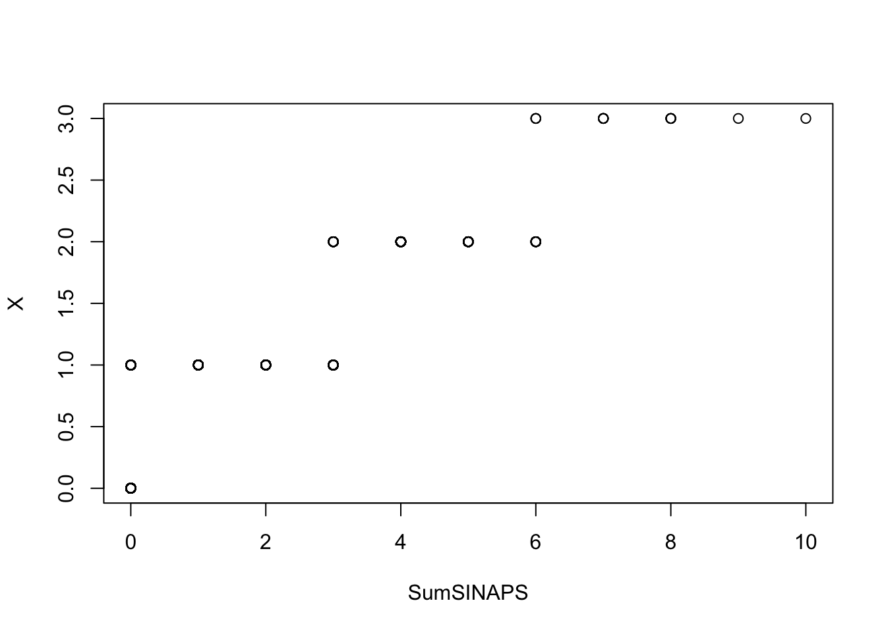
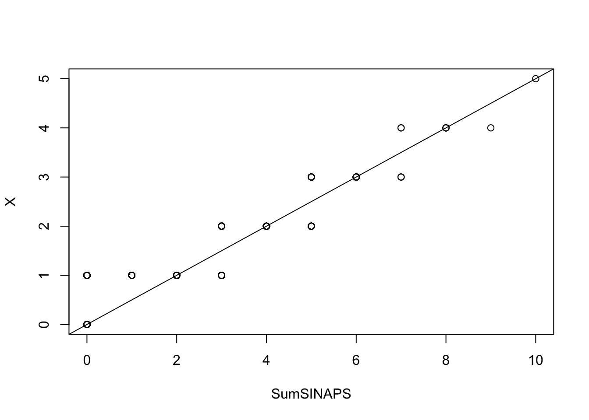

1 Études statistiques
1.1 Nettoyage des données
Cette partie de ce document sera consacrée à l’étude statistique de notre jeu de données.
Il existe quelques incohérences au niveau des données telles que des charges négatives ou nulles pour des nombres de sinistres positifs et des nombres de sinistres nuls pour des charges positives.
Nous avons donc choisi de remplacer par 0 toutes les charges négatives pour des sinistres nuls, tous les nombres de sinistres positifs pour des charges nulles et par la valeur absolue des charges pour les nombre de sinistres positifs.
library(dplyr)
# Ajout de la somme des sinistres par police
database$SumSINAPS <- database %>% select(starts_with("SINAP")) %>%
apply(., 1, sum)
# Transformation des données
database <- database %>% mutate(SumSINAPS = case_when(CHARGE==0~0,
TRUE~SumSINAPS)) %>%
mutate(CHARGE = case_when(SumSINAPS==0~0,
SumSINAPS>0~abs(CHARGE),
TRUE~0))Nous venons de créer avec le code précédent une nouvelle colonne dans la base de données database que nous avons appelé SumSINAPS.
On peut facilement faire un sommaire de la somme des sinistres ainsi que des charges avec la fonction summary afin de connaître les mesures de tendance de cette variable.
summary(database[,c("CHARGE","SumSINAPS")])## CHARGE SumSINAPS
## Min. : 0.0 Min. : 0.000
## 1st Qu.: 0.0 1st Qu.: 0.000
## Median : 0.0 Median : 0.000
## Mean : 170.1 Mean : 0.169
## 3rd Qu.: 0.0 3rd Qu.: 0.000
## Max. :95151.0 Max. :10.0001.2 Représentations graphiques
Dans cette partie du projet, nous allons effectuer un ensemble de représentations graphiques afin de savoir l’impact des variables sur les sinistres.
Ces graphes suivants indiquent la fréquence des sinistre en fonction des différentes variables : sexe, zone, catégorie socio-professionnelle, age, usage du véhicule et statut matrimonial.
library(dplyr)
library(ggplot2)
B1 = database %>% select(SEXE = SEX,STATUT,ZONE,CSP,USAGE,AGECOND) #selection des variables.
plot_ <- function(df, N){
name = names(df)
for (i in name){
df0 <- data.frame(df[[i]],N) # Creation d'une df(Variables,N)
colnames(df0) <- c(i,'N')
s <- df0 %>% group_by(valeur = df0[[i]]) %>%
summarise(total = sum(N)) # Creation d'une df(groupe de Variables, Total)
assign(paste0("table",i),s,.GlobalEnv)
# debut du code pour la figure
figure <- ggplot(data = s, aes(x = valeur, y = total/sum(total))) +
geom_col() +
xlab(i) + # Ajout du label de x
ylab(paste0("Frequence ",i)) + # Ajout du label de y
hrbrthemes::theme_ipsum(grid = "Y") # Ajout d'un theme pour la figure
# fin du code pour la figure
assign(paste0("fig",i),figure,.GlobalEnv) #assigantion de la figure i
}
}
SumSINAPS=database$SumSINAPS
plot_(B1,SumSINAPS) # Execution de la fonction precedenterequire(patchwork)
(figSEXE|figUSAGE)/figAGECOND
(figSTATUT|figZONE)/figCSPOn constate que pour la variable SEX la fréquence des sinistres des hommes(M) est plus que le double de celle des femmes(F).
Les clients du type d’usage de véhicule \(2\) ont les fréquences les plus élevées de sinistres, suivit dans cet ordre par les usages \(1\),\(3\) et \(4\).
Les conducteurs de statut A ont une fréquence de sinistre à peu près cinq fois plus élevées que celle des conducteurs de statut C.
On peut utiliser ce même raisonnement pour interpréter tous les autres graphes.
1.3 Tests statistiques
Nous allons faire des tests statistiques histoire de connaître quelle loi suit la somme totale des sinistres SumSINAPS.
Les tests d’adéquation servent à tester si un échantillon est distribué selon une loi de probabilité donnée.
Ils permettent de décider, avec un seuil d’erreur \(\alpha\) spécifié, si les écarts présentés par l’échantillon par rapport aux valeurs théoriques attendues sont dus au hasard ou sont au contraire significatifs.
Estimation par la méthode du maximum de vraisembance.
Soit \(X\) une variable aléatoire réelle de loi discrète ou continue dont on veut estimer le paramétre \(\theta\). Alors on définit une fonction \(f\) telle que:
\[f(x;\theta) = \begin{cases}
f_\theta(x) : si\; X\;variable\; aléatoire\; continue \\
P_\theta(X=x) : si\; X\;variable\; aléatoire\; discrète
\end{cases}\]
On appelle fonction de vraisemblance de \(\theta\) pour une réalisation \((x_1,\dots,x_n)\) d’un échantillon, la fonction de \(\theta\):
\[L(x_1,\dots,x_n;\theta)=f(x_1,\dots,x_n;\theta)=\prod\limits_{i=1}^{n}f(x;\theta)\]
La méthode consiste à estimer \(\theta\) par la valeur qui maximise \(L\), cette méthode s’appelle méthode du maximum de vraisemblance(\(MLE\)1), on choisit la valeur \(\theta\) qui réalise le maximum de \(L(x_1,\dots,x_n;\theta)\). Pour cela on cherche \(\theta\) telle que:
\[\frac{\partial L}{\partial \theta}=0 \;\; et\;\; \frac{\partial^2 L}{\partial \theta^2}\leq 0\]
On passe en général au logarithme, c’est à dire on cherche \(\theta\) telle que:
\[\frac{\partial\big(ln(L)\big)}{\partial \theta}=0 \;\; et\;\; \frac{\partial^2 \big(ln(L)\big)}{\partial \theta^2}\leq 0\]
Nombre de sinistres
Pour faire les tests, nous allons générer une variable aléatoire \(X\) suivant une loi choisie, puis tester si la somme totale des sinistres SumSINAPS est de même loi.

Loi de poisson
Dans le cas habituel théorique, le nombre de sinistres suivrait la loi de poisson ce qui nous pousse à faire ce premier test.
#Generer une v.a de longueur indentique a celle de SumSINAPS et suivant la loi de poisson
X=rpois(length(SumSINAPS),mean(SumSINAPS))
#test de poisson
ks.test(SumSINAPS,X)##
## Two-sample Kolmogorov-Smirnov test
##
## data: SumSINAPS and X
## D = 0.076048, p-value < 2.2e-16
## alternative hypothesis: two-sidedLa \(p\)-\(value\) est inférieure à \(0.5\) donc on rejette l’hypothèse \(H_0\) selon laquelle la somme des sinistres suit une loi de poisson.
Pour consolider cette conclusion on peut faire un test visuel avec la fonction qqplot().
Si SumSINAPS et \(X\) suivent la même loi, alors le nuage de points doit s’apparenter à une droite.
qqplot(SumSINAPS,X)
On voit clairement que le nuage de points est loin d’être sur une même droite, ce qui conforte notre conclusion précédente.
Loi géométrique
A part la loi de poisson, le nombre de sinistre pourrait suivre la loi géométrique.
D’ailleur la densité de SumSINAPS que nous avons tracer a la même forme que le graphe d’une densité de la loi géométrique.
On peut tester graphiquement si une variable suit une loi géométrique toujours avec la même fonction qqplot().
Mais faudra trouver le paramètre \(p\) de la loi loi géométrique pour pouvoir générer notre échantillon \(X\).
Il existe un package permettant d’entraîner une donnée selon la loi loi géométrique du nom de fitdistrplus2 afin de trouver l’estimateur du paramètre \(p\) par la méthode du maximum de vraisemblance.
library(fitdistrplus)
fitSINAPS <- fitdist(data = SumSINAPS,distr = "geom",
method = "mle")
summary(fitSINAPS)## Fitting of the distribution ' geom ' by maximum likelihood
## Parameters :
## estimate Std. Error
## prob 0.8554255 0.002564721
## Loglikelihood: -7767.809 AIC: 15537.62 BIC: 15545.3La sortie de la fonction summary indique que \(p =0.8554255\), on va l’utiliser pour générer \(X\) puis faire le test de qqplot.
X = rgeom(length(SumSINAPS),prob =0.8554255)
qqplot(SumSINAPS,X)
abline(0,0.5)
Ce graphe s’apparente plus avec une droite que celui tracer dans la section précédente. En plus le modèle entraîné présente des valeurs empériques et théoriques très proche.
plot(fitSINAPS)On peut donc supposé que \(SumSINAPS\sim\mathcal{G}(p:= 0.8554255)\)
Charges de sinistres
Comme nous l’avons fait précédemment, nous allons chercher le meilleur paramétré \(\mu log\) et \(sdlog\) par la méthode \(MLE\) pour la charge des sinistres qui suivrait une loi lognormale.
library(fitdistrplus)
Charge <- database$CHARGE
Charge <- Charge[which(Charge>0)]
fitCharge <- fitdistr(Charge,"log-normal")
fitCharge## meanlog sdlog
## 6.66608145 1.38553971
## (0.03901768) (0.02758967)Autrement dit, si la charge de sinistres suit une loi lognormale alors ce sera:
\[log\mathcal{N}(6.66608145,1.38553971)\] On peut faire le test de Kolmogorov-Smirnov3 pour conforter se résultat en tenant compte de l’écart type des erreurs d’estimation de la fonction fitdistr.
estimated = fitCharge$estimate + fitCharge$sd
X <- rlnorm(length(Charge),estimated[["meanlog"]],estimated[["sdlog"]])
ks.test(Charge,X)##
## Two-sample Kolmogorov-Smirnov test
##
## data: Charge and X
## D = 0.048374, p-value = 0.1046
## alternative hypothesis: two-sidedLa \(p-value = 0.1046>\alpha=5\%\) alors on rejette pas l’hypothèse \(H_0\), alors la charge de sinistres pourrait suivre la loi \(log\mathcal{N}(6.7,1.4)\).
library(ggplot2)
dfdensity = data.frame(Charge,X)
ggplot(data = dfdensity)+
geom_density(aes(x=Charge,color ="blue"))+
geom_density(aes(x=X,color="red"))+
scale_colour_manual(values = c( "red", "blue"),
labels= c("Charge","X"))+
ggtitle("Densités",
subtitle = "X a été généré aléatoirement\nSuivant la loi loi lognormale")+
ggthemes::theme_tufte()Figure 1.1: On peut constater que les densité de X et Charge sont presque les mêmes
MLE : Maximum likelihood estimation↩︎
https://cran.r-project.org/web/packages/fitdistrplus/index.html↩︎
https://en.wikipedia.org/wiki/Kolmogorov%E2%80%93Smirnov_test↩︎